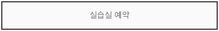
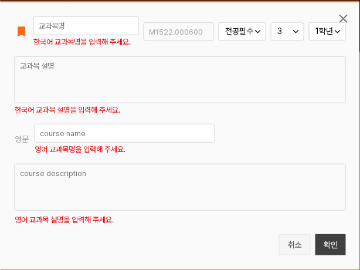
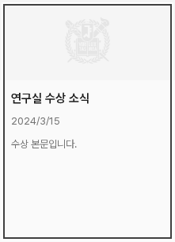
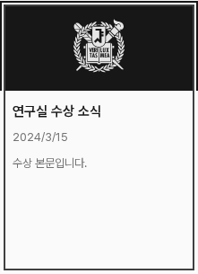
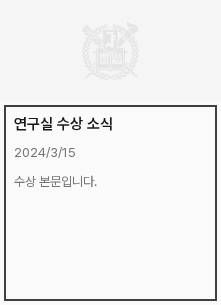
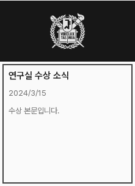
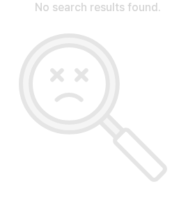
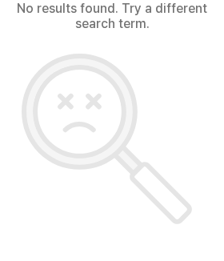

메인 카드 초점과 빈 검색 결과
판단2개 · 제안은 앱 미적용먼저, 적용한 내용을 확인해 줘
이미지 안내창: 두 버튼의 안쪽 초점, 닫기 글자600·바탕100→호버/눌림200을 적용했다. 한영320/1280px·단일 버튼·강제 색상 모드와 키보드 닫기를 확인했다. 전체 적용 견본.
닫기 초점 · 실제 적용
닫기 호버 · 실제 적용
목록·폼: 선택 목록·검색 결과·새 소식·세미나·인물 이름/정보와 태그 제안에 공통 초점을 연결했다. 교과목의 네 필수 입력에는 이미 정한 필드 아래 오류 안내를 연결했다. 검증·저장 로직은 유지한다.
실제 목록 초점·교과목 오류 보기
선택 목록

교과목 필수 오류

1. 메인 새 소식 카드 · CE-Q1
문제: 바깥 초점선은 캐러셀에 잘리고, 단순 안쪽선은 상단 이미지에 가린다. 두 안 모두 사진보다 위에 표시하고 키보드 초점 때만 나타난다. 카드 크기·기본 모양·캐러셀 동작은 유지한다.
A 추천 · 카드 전체를 두 겹 선으로
흰2px+짙은2px 선으로 밝고 어두운 바탕에서 전체 클릭 영역을 보여준다. B보다 표시가 강하다.


B · 글 영역만 짙은 선으로
사진을 건드리지 않고 표시를 단순하게 유지한다. 실제 클릭 영역 전체를 둘러싸지는 않는다.


전체 클릭 영역을 표시하는 A를 추천해. 밝음/어두움은 실제 사진이 아닌 시험 바탕이야. 승인 후 모바일 가로 스크롤·실제 키보드 초점·강제 색상 모드에서 확인할게.
2. 빈 검색 결과의 안내 · CE-Q2
문제: 결과가 없다는 주된 문장이 경계·장식색인neutral-300으로 표시되어 흐리다. 제안: 문장은 기존 보조 글자색 #737373로 바꾸고, 검색어를 바꿔 보라는 안내를 덧붙인다.16px 크기·굵기와 돋보기 그림은 유지한다.
{kind=link}
{kind=link}
English · 320px 변경 전

English · 320px 제안

‘검색 결과가 없습니다. 검색어를 바꿔 보세요.’
‘No results found. Try a different search term.’
함께 정할 두 가지
- 메인 카드 초점은 A 전체 카드 / B 글 영역 중 어느 쪽이 좋을까? A를 추천해.
- 빈 검색 결과의 안내색·문구를 제안대로 적용할까?
예: “1 A, 2 적용”. 두 제안은 아직 앱에 적용하지 않았다. 이유·범위·검증 한계.